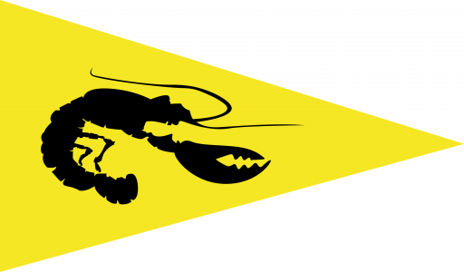

Warsash Sailing Club — Pursuit Race Start Sequence
Race
Find Start
iPhone: turn OFF the mute switch and turn the RINGER volume up with the side buttons (not the media/music volume) — Safari plays this at ringer volume.
Test Sound
🔇 Sound Off
Current time
--:--
Last Start
Next Sound Signal
--
Next Start
Find Start Time
Select a class…